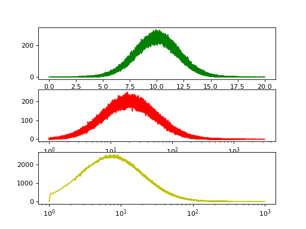
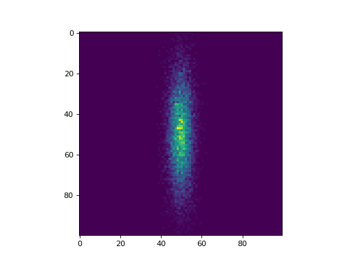
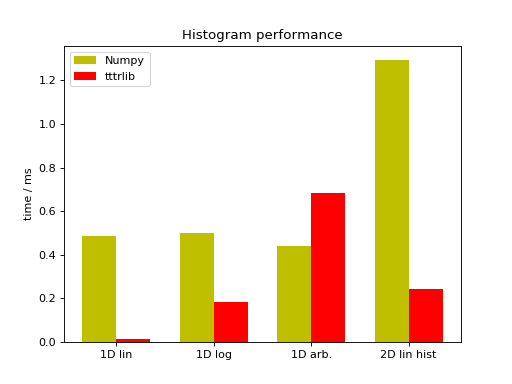

Tools¶
Histograms¶
tttrlib offers some functions and classes for the creation of histograms.
They are part of tttrlib to offer more performance in direct comparison to
general purpose routines for analysis methods as Photon Distribution Analysis
(PDA) that make heady use of repeated histogram calculations.
Note
These function and classes are not intended as a substitution for more
general functions, e.g., offered by NumPy and
are less tested. They offer performance advantages for histograms
calculated on a logarithmic (log10) scale and a linear scale in direct
comparison to NumPy.
One dimensional histograms¶
tttrlib supports one dimensional histograms with linear, logarithmic, or
arbitrary spaced bins.
import tttrlib
import numpy as np
import pylab as p
fig, ax = p.subplots(3, 1)
# Linear histograms
data = np.random.normal(10, 2, int(2e6))
bins = np.linspace(0, 20, 32000, dtype=np.float)
hist = np.zeros(len(bins), dtype=np.float)
weights = np.ones_like(data)
tttrlib.histogram1D_double(data, weights, bins, hist, 'lin', True)
ax[0].plot(bins, hist, 'g')
# Logarithmic histogram
bins = np.logspace(0, 3.5, 32000, dtype=np.float)
data = np.random.lognormal(3.0, 1, int(2e6))
hist = np.zeros(len(bins), dtype=np.float)
weights = np.ones_like(data)
tttrlib.histogram1D_double(data, weights, bins, hist, '', True)
ax[1].semilogx(bins, hist, 'r')
# Histogram with arbitrary spacing
bins1 = np.linspace(1, 600, 16000, dtype=np.float)
bins2 = np.logspace(np.log10(bins1[-1]+0.1), 3.0, 16000, dtype=np.float)
bins = np.hstack([bins1, bins2])
hist = np.zeros(len(bins), dtype=np.float)
weights = np.ones_like(data)
tttrlib.histogram1D_double(data, weights, bins, hist, '', True)
ax[2].semilogx(bins, hist, 'y')
p.show()
(Source code, png, hires.png, pdf)
{kind=link}
{kind=link}

In the example shown above, the histograms for the three bin spacings are shown.
Multi dimensional histograms¶
In addition to simple one dimensional histograms tttrlib can calculate
multidimensional histograms with an arbitrary number of dimensions. For that,
first a new object of the class doubleHistogram is created. Here, double
refers to the data type double - a floating point number. Next, axes are added
to the Histogram by calling the method setAxis. The first argument is the
number of the axis, the second the name of the axis, the third and the fourth
the range of the axis, the fifth the number of bins, and the sixth the type of
the axis. The Histogram class support arbitrary axis types. However, when
initializing an axis via setAxis the axis type must be either lin or
log10 for a linear or an logarithmic axis with base 10. Next, the data are
assigned to the histogram by the setData method and the histogram is
calculated by the update method. A working example for 2D normal
distributed data is shown below.
import timeit
import tttrlib
import numpy as np
import pylab as p
def histogram2d(data, bins):
h = tttrlib.doubleHistogram()
h.setAxis(0, "x", -3, 3, bins, 'lin')
h.setAxis(1, "y", -3, 3, bins, 'lin')
h.update(data.T)
return h.getHistogram().reshape((bins, bins))
print("\n\nTesting 2D Histogram linear spacing")
print("---------------------------------------")
x = np.random.randn(10000)
y = 0.2 * np.random.randn(10000)
data = np.vstack([x, y])
bins = 100
hist2d = histogram2d(data, 100)
p.imshow(hist2d)
p.show()
(Source code, png, hires.png, pdf)
{kind=link}
{kind=link}

Above, a two dimensional histogram with linear spaced bins is shown.
Benchmark¶
A direct comparison of the performance of the tttrlib and the Numpy
histogram routines (Numpy version 1.13.3, Linux) demonstrates that except for
arbitrarily spaced histograms the tttrlib histogram routines outperform
numpy by at least a factor of 2 (1D log10 Histograms and 2D Histograms) or by a
factor of ~40 (1D linear Histograms)
(Source code, png, hires.png, pdf)
{kind=link}
{kind=link}

The current histogram implementation in tttrlib is not particularly
optimized for speed, e.g., by making use of multiple cores. Nevertheless, in
special cases it outperforms Numpy. This comparison demonstrates that Numpy is
optimized for general use cases.
Note
As already stressed above, the histogram routines are (except for the
rarely used case of arbitrarily spaced histograms primarily optimized for performance (with room for improvements). The routines are internally used.
For other purposes than the applications tested for in tttrlib other libraries, e.g.
Boost histogram are a better
choice.